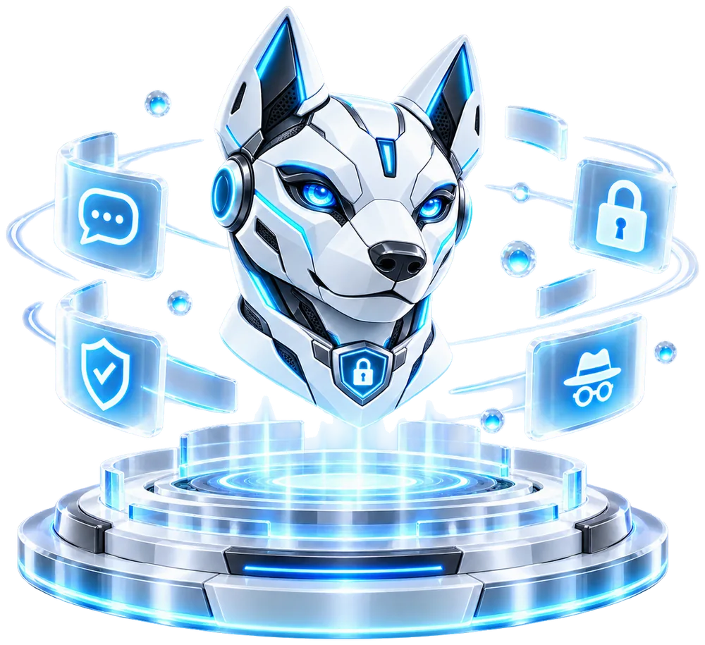
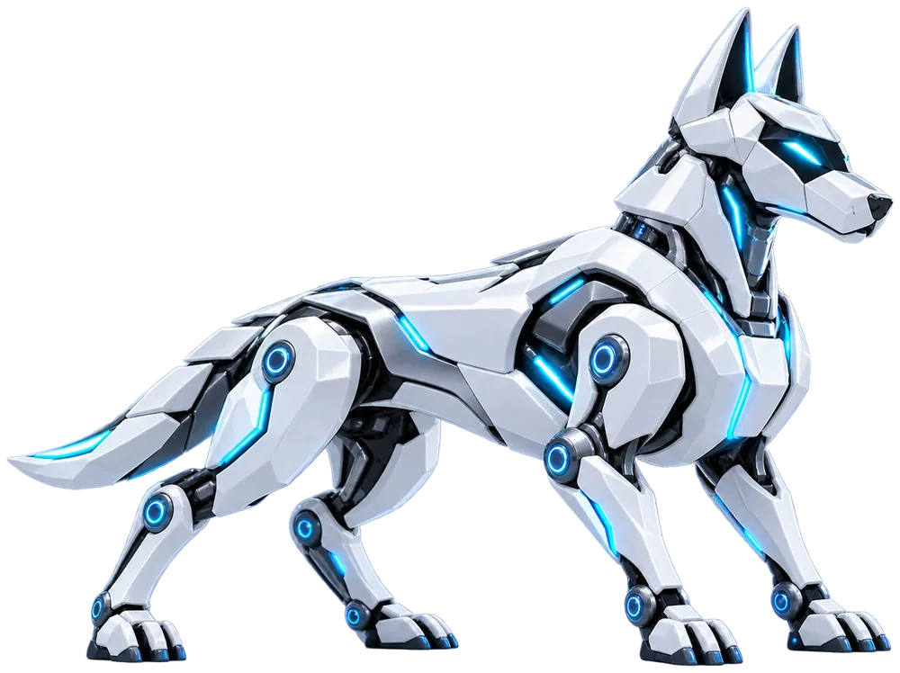

End-to-end encrypted
Only you and your contacts can read your messages.
Secure · Private · Connected
CyberDog is an end-to-end encrypted messenger that puts your privacy first. No phone number, no email, no account.
A more private internet. Together.
Only you and your contacts can read your messages.
No phone number, no email, no real-world identity.
The server passes the packet on and cannot open it.
Your data stays on your device, not in the cloud.
Transparent and open to audit.
How it works
Encryption protects what you say. The server and your provider still see your IP address and when you send.
About securityYou send a message to your contact.
It is encrypted on your device.

The server passes the sealed packet on and deletes it once delivered.
Only your contact can decrypt and read it.
Available on your devices
Start messaging privately today. Free and open source.

A more private internet. Together.